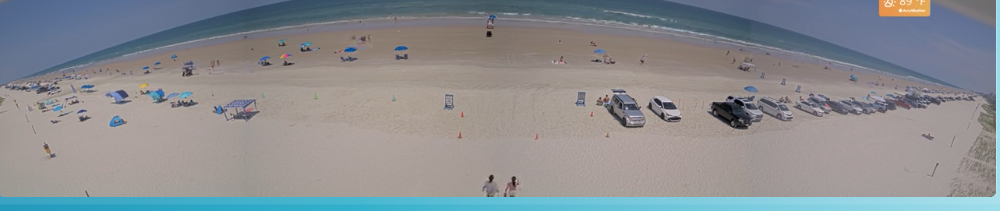

Beach Ramp Status
Volusia County, FL
{{ freshLabel }}
{{ phaseName }}
{{ clock }}
{{ s.label }}
›
{{ s.value }}
{{ s.detail }}
{{ f.label }}{{ f.count }}
{{ t.name }}
{{ t.status }}
{{ t.since }}
Live cam · New Smyrna Beach
{{ camNote }}

New Smyrna Beach cam offline
Reconnecting — last frame 3:12 PM. Four other cams are live.
Today's tide
{{ tideNote }}
{{ e.kind }}
{{ e.time }}
{{ e.height }}
Forecast
NWS · six periods
{{ f.period }}
{{ f.temp }}
{{ f.desc }}
Recent changes · today
County feed
{{ a.time }}
{{ a.ramp }}
{{ a.status }}
NOAA 8721164 · NWS api.weather.gov · Volusia County feed
{{ updated }}